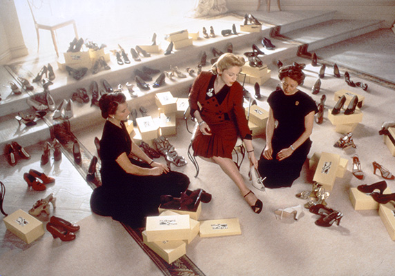

홈 > 브랜드 매거진 > 살바토레 페라가모
살바토레 페라가모
살바토레 페라가모는 패션·럭셔리 브랜드로, 소재, 실루엣, 로고, 컬렉션 운영이 취향과 지위 신호를 만드는 영역입니다.
산업 분야 패션·럭셔리 · 공개 등급 자료 기반 · 브랜드 평가 4.3 ★

한눈에 보는 브랜드
살바토레 페라가모는 패션·럭셔리 브랜드입니다. 소재, 실루엣, 로고, 컬렉션 운영이 취향과 지위 신호를 만드는 영역으로 분류되며, 브랜드명과 업종, 운영 국가, 공개 로고 여부를 함께 보며 사전 항목의 기본 맥락을 확인할 수 있습니다.
브랜드 관점
살바토레 페라가모 항목은 단순한 이름 목록이 아니라 패션·럭셔리 시장 안에서 어떤 역할을 하는지 읽기 위한 기준점입니다. 제품·서비스 범위, 유통 방식, 시각 아이덴티티, 시장 포지션을 함께 비교하면 같은 산업의 다른 브랜드와 차이가 선명해집니다.
시작과 성장
살바토레 페라가모(Salvatore Ferragamo)는 이탈리아 럭셔리 브랜드로, 슈즈, 가죽 제품, 의류, 악세서리 등을 제작 및 판매한다. 이탈리아 전통인 가족 경영 체제의 모범 사례로 손꼽히며, 피렌체의 국민 브랜드로 사랑받고 있다.
브랜드 아이덴티티
창립자 페라가모의 독창성은 브랜드 살바토레 페라가모를 통해 계승되고 있다. 그의 창조적인 기술은 엄격한 생산 기준으로 이어지고 있으며, 패션과 문화, 예술은 모두 연관된다는 페라가모의 정신은 예술 사업을 후원하는 프로젝트로 확장되었다.
제품과 서비스
간치니 심볼이 장식된 핸드백과 그로스그레인 리본이 달린 바라슈즈는 살바토레 페라가모의 시그니처 아이템이다. 페라가모가 구두 디자이너로서는 최초로 수상한 니먼 마커스 상을 20년 뒤인 1967년, 장녀 피암마 페라가모가 수상하며 살바토레 페라가모의 명성을 이어갔다.
창의적인 디자인과 이탈리아 남부 특유의 강렬한 컬러감은 살바토레 페라가모만의 특색을 보여준다.
현재 상태
산업: 패션·럭셔리
타임라인
BI/CI 변천사
함께 읽을 브랜드
 패션·럭셔리 · 편집 검수구찌
패션·럭셔리 · 편집 검수구찌구찌는 이탈리아의 패션·럭셔리 브랜드로, 소재, 실루엣, 로고, 컬렉션 운영이 취향과 지위 신호를 만드는 영역입니다.
 패션·럭셔리 · 편집 검수까르띠에
패션·럭셔리 · 편집 검수까르띠에까르띠에는 패션·럭셔리 브랜드로, 소재, 실루엣, 로고, 컬렉션 운영이 취향과 지위 신호를 만드는 영역입니다.
 패션·럭셔리 · 편집 검수누디진
패션·럭셔리 · 편집 검수누디진누디진는 스웨덴의 패션·럭셔리 브랜드로, 소재, 실루엣, 로고, 컬렉션 운영이 취향과 지위 신호를 만드는 영역입니다.
 패션·럭셔리 · 편집 검수랄프 로렌
패션·럭셔리 · 편집 검수랄프 로렌랄프 로렌는 패션·럭셔리 브랜드로, 소재, 실루엣, 로고, 컬렉션 운영이 취향과 지위 신호를 만드는 영역입니다.
 패션·럭셔리 · 편집 검수롤렉스
패션·럭셔리 · 편집 검수롤렉스롤렉스는 스위스의 패션·럭셔리 브랜드로, 소재, 실루엣, 로고, 컬렉션 운영이 취향과 지위 신호를 만드는 영역입니다.
 패션·럭셔리 · 편집 검수버버리
패션·럭셔리 · 편집 검수버버리버버리는 영국의 패션·럭셔리 브랜드로, 소재, 실루엣, 로고, 컬렉션 운영이 취향과 지위 신호를 만드는 영역입니다.
 패션·럭셔리 · 편집 검수비비안 웨스트우드
패션·럭셔리 · 편집 검수비비안 웨스트우드비비안 웨스트우드는 패션·럭셔리 브랜드로, 소재, 실루엣, 로고, 컬렉션 운영이 취향과 지위 신호를 만드는 영역입니다.
 패션·럭셔리 · 편집 검수어그
패션·럭셔리 · 편집 검수어그어그는 이탈리아의 패션·럭셔리 브랜드로, 소재, 실루엣, 로고, 컬렉션 운영이 취향과 지위 신호를 만드는 영역입니다.